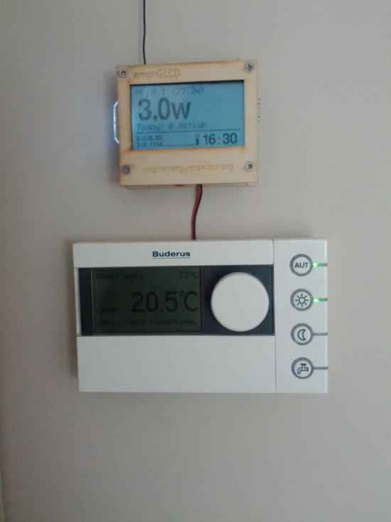

Hi all,
While building the emonGLCS v1.2 and while installing it, I came acros a few ideas that might make a future board more intresting.
1. Female headers for LCD
Provide female headers to connect the LCD to. Now it's solderd right onto the board, making it harder to reach the bottom of the board in the future. Unforrtunately, this idea popped up after I soldered by own LCD
2. Provide a power input that can handle different incoming voltages, instead of the 3.3V fixed input.
I added a LM2575T to the emonGLCD to be able to wire it to the power source of my home termostat. This thermostat provided me with 15V DC input and using the voltage regulator, I can mount the emonGLCD to the wall right above the normal thermostat, with only two small wires connecting it. I removed the input capacitor on the LM2575T to make sure the thermostat can still communicate with the base system using some kind of protocol using the same 15V wires.
The board could then provide USB power, 3.3V direct input and a 5V > 37V "generic" input.
Maybe some of you guys have some additional ideas?
Re: [emonGLCD] - New PCB idea box

Please note that the information on the emonGLCD is not yet the right information. I still have to calibrate it and it doesn't measure anything at the time of the picture.
Re: [emonGLCD] - New PCB idea box
Hi thanks for your ideas.
We have in the past used female mounting headers but it made the emonGLCD unit fatter than it needed to be. Maybe we could provide the option of headers for users who don't mind sacrifising some aesthetics for increased flexiability.
Good idea regarding providing a power input which is not restricted to 3.3V. If you connect your power to the PWR and GND pins this will route the incoming voltage through the MCP1702 voltage regulator. This can actually handle up to 12V input.